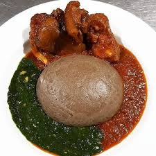

Amala Recipe Page

Description
Amala is a Nigerian recipe made of yam flour. It is native to south-western part of the country, mostly associated with the yorubas
Ingredients
- Yam Flour
- Water
- Turning stick
- Pot
Steps
- Seive yam flour if its not already seived and measure in a bowl for accuracy
- Put Water in a pot and leave to boil
- Gently put the seived flour in the pot and turn with stick to avoid caking
- Keep turning until you acheive a perfect level of solidity best preffered by you
Home page